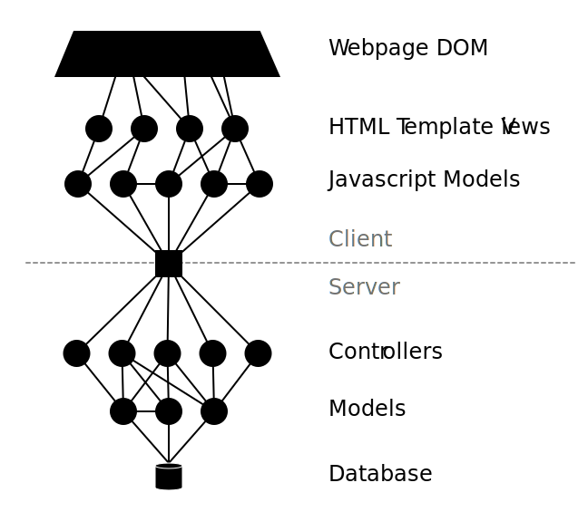

We take it from a database, repackage it into "models", put those into "controllers", these controllers rewrap it as JSON, send it over the wire via something like XMLHTTPRequest to a web browser, which stores it in another set of "models" in JavaScript, whose data is then plugged into HTML templates, and finally rendered into the DOM.

We do this wrangling by connecting many different systems, with different APIs to learn:
It becomes difficult to keep these synchronized when something changes. If a circle's state depends on another circle's state, then it must know to update whenever the other one updates. If you don't have a perfect system, this can get complex.
These circles often communicate with events, like messageAdded rather than state. This makes it more complex because ______. And it breaks caching because a cache will need to know each event.
React points out that we can simplify the synchronization of DOM with Javascript Models by re-rendering the DOM each time the Javascript changes. But it doesn't address all the other levels of state.
Statebus generalizes this idea to the whole stack, on client and server. Each level is re-rendered from the circles it depends on. To make it efficient:
We can apply this general technique to each layer, replacing this ad-hoc soup with a uniform, efficient, simple architecture that requires less code, incurs less complexity, and provides more features.
We can simplify all these technologies into two operations happening: (1) Fetching state, and (2) Saving changes to state.
Statebus lets you implement each layer uniformly, with just these
two methods
You can write the same functionality with much less code. [Show examples]
This is what makes code so much simpler. One-way dataflow, single source of truth, etc. This is the best FRP ever made.
For instance, we can replace the server with a dumb store that doesn't have any code of its own.
other_data = fetch('state://other.service/something1')
Because nodes have a uniform protocol, incorporating data from a different site is as easy as giving it a different URL.
(Make diagram that replaces server side with multiple services of different colors.)
(Make diagram)
(Make diagram)
(Make diagram)
These methods
 Caption:
Caption: